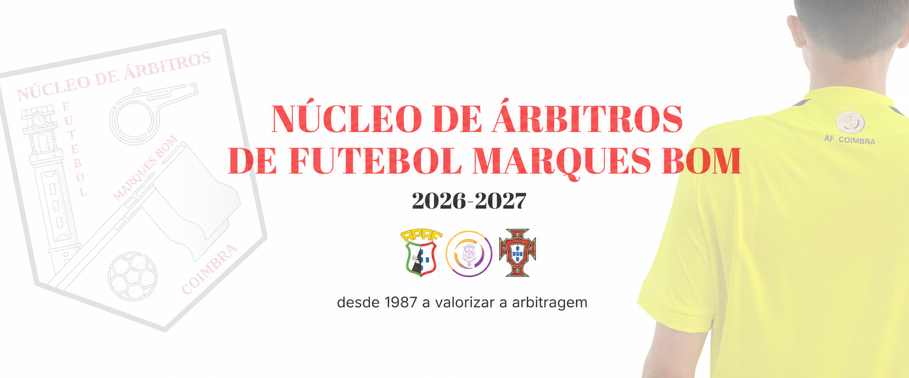
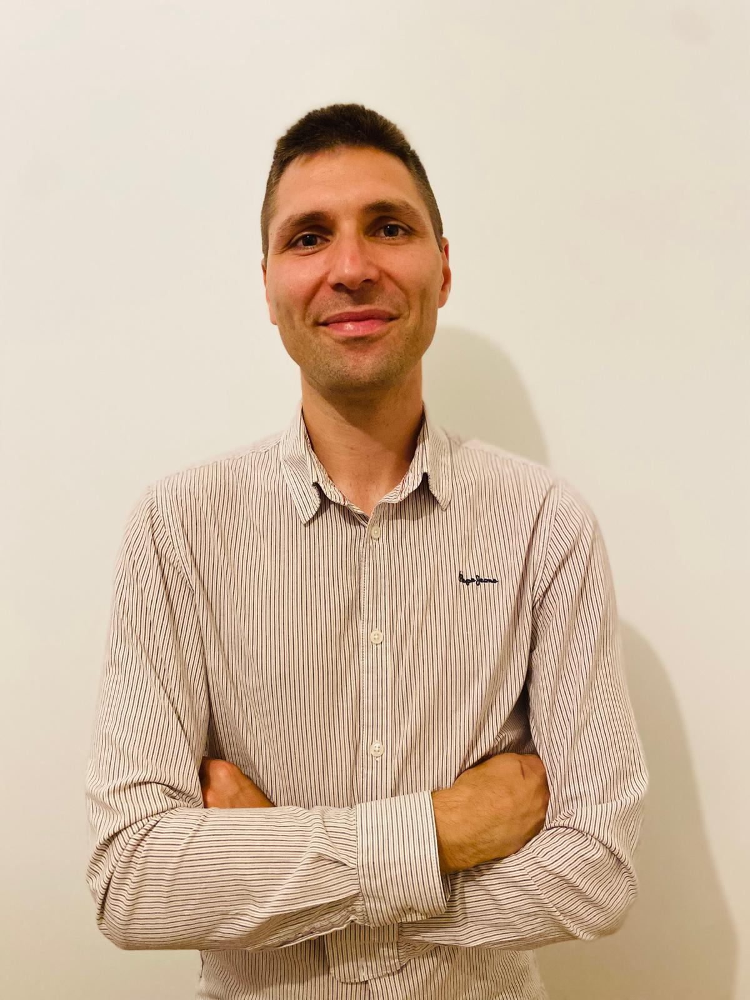

Início
História
Corpos Sociais
Plano de Atividades
Documentos
Contactos
Sócio

Corpos Sociais
Direção
Presidente
Diogo Alexandre Alves Silva

Vice-Presidente
Nuno Miguel Santos Tedim Macieira Guerra
Vice-Presidente
Tiago Filipe Ferreira Queirós
1.º Secretário
Luís André Neto de Jesus
2.º Secretário
Jaime Bragança Rodrigues Martins
Tesoureiro
João Filipe Marques Marceneiro Gomes
Vogal
Daniela Roseiro Simões
Vogal
Joana Mafalda Lopes Nogueira
Vogal
João Bernardo Neves
Suplente
Matilde Margarida dos Santos Pereira Soares
Suplente
Renato Alexandre Vaz de Almeida
Assembleia Geral
Presidente
Nuno Miguel da Costa Bogalho
Secretário
Gonçalo Rafael dos Santos Neves
Vogal
António Lourenço Costa
Conselho Fiscal
Presidente
José Pedro Morgado Laranjeira
Secretário
Miguel André Raimundo Figueira Aguilar
Relator
João António Rua Ferreira